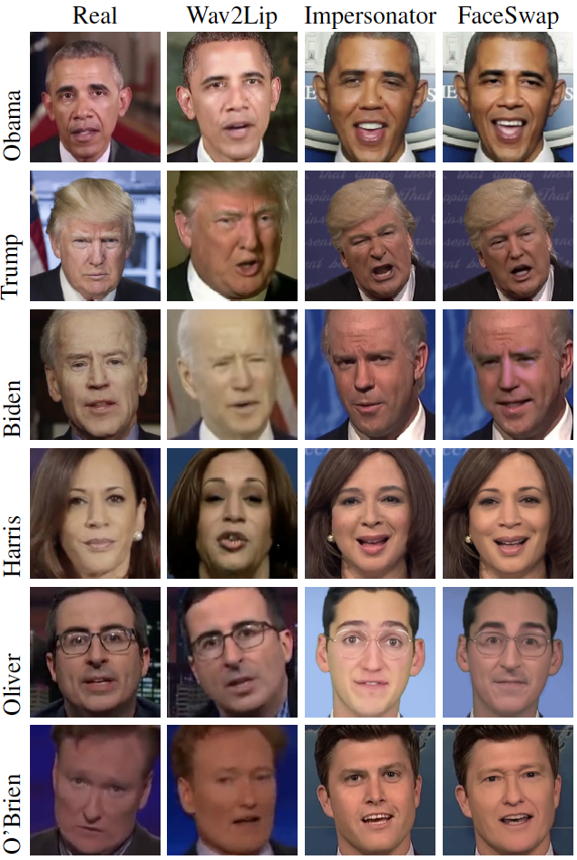
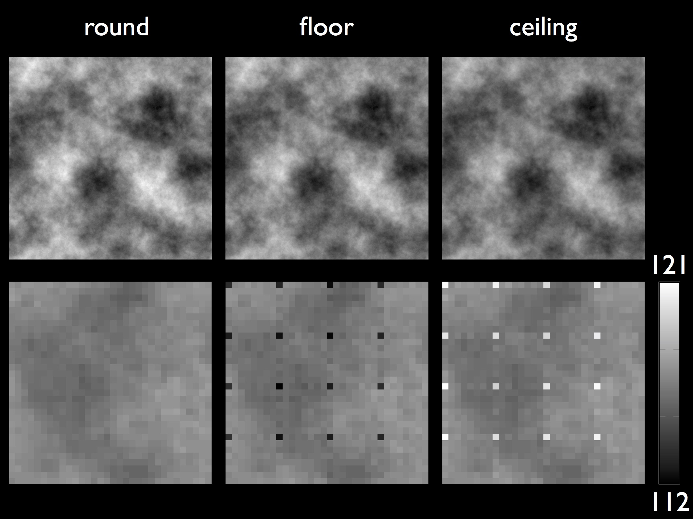
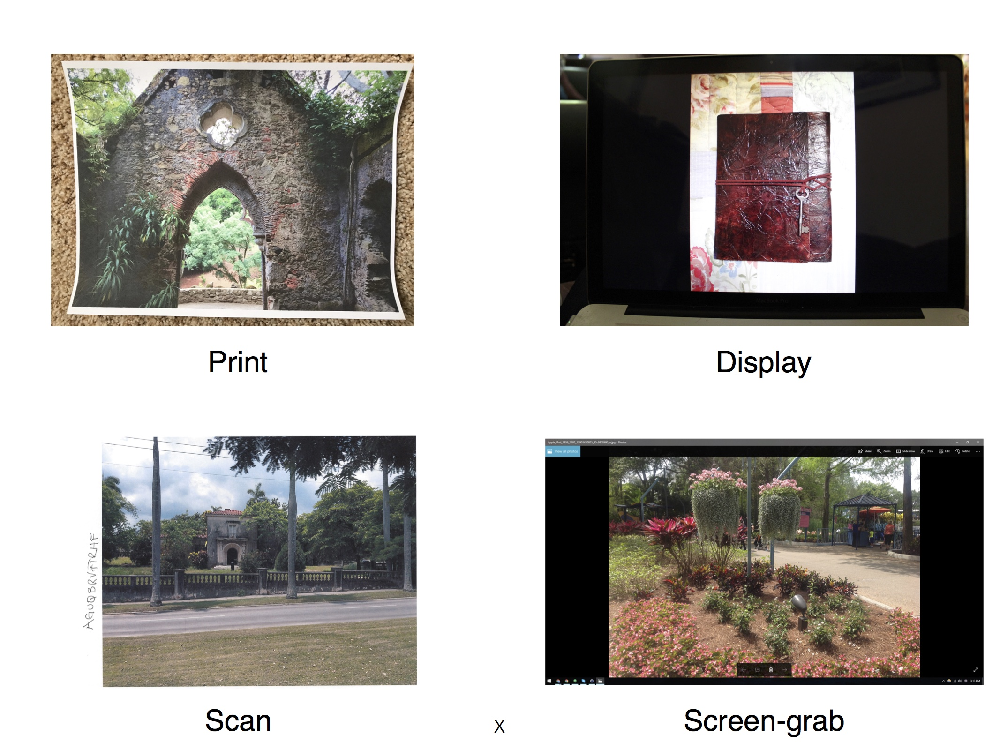
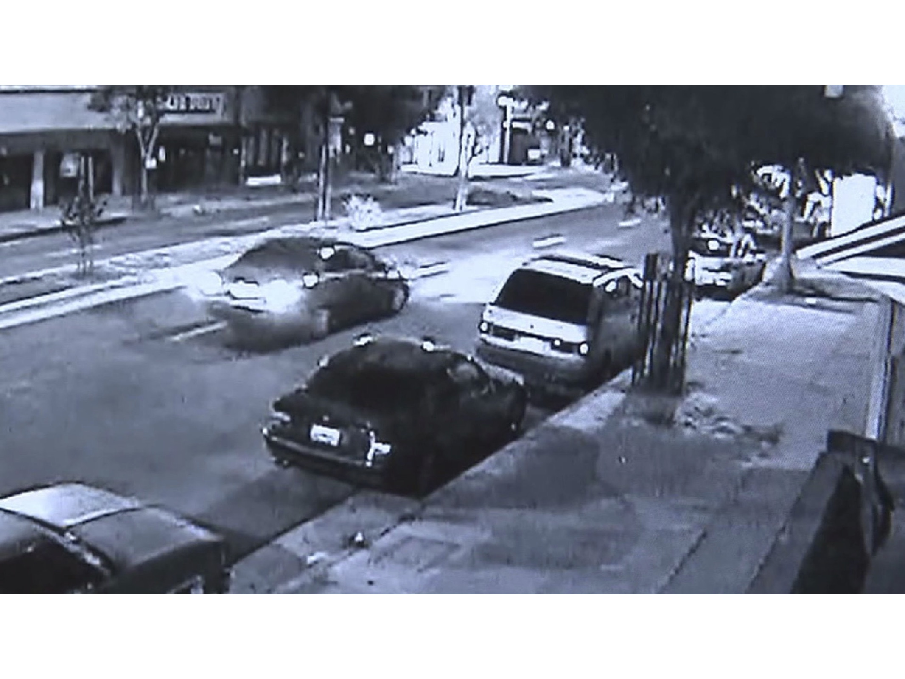

|

|
-
Deep Fake Detection:
The creation of sophisticated fake videos has been largely relegated to Hollywood
studios or state actors. Recent advances in deep learning, however, have democratized
the creation of sophisticated and compelling fake images, videos, and audios.
This synthetically-generated media – so-called deep fakes – continue to capture the
imagination of the computer-graphics and computer-vision communities. At the
same time, the easy access to technology that can create deep fakes of anybody
saying anything continues to be of concern because of its power to disrupt democratic
elections, commit small to large-scale fraud, fuel dis- and mis-information
campaigns, and create non-consensual pornography.
-
"Watch Those Words: Video Falsification Detection Using Word-Conditioned Facial Motion.",
S. Agarwal , L. Hu, E. Ng, T. Darrell, H. Li, and A. Rohrbach,
WACV, 2023.
[pdf]
-
"Detecting Deep-Fake Videos from Aural and Oral Dynamics",
S. Agarwal and H. Farid,
Workshop on Media Forensics at CVPR, Online, 2021.
[pdf]
-
"Detecting Deep-Fake Videos from Appearance and Behavior",
S. Agarwal , T. Gaaly, H. Farid, and S. Lim,
IEEE Workshop on Information Forensics and Security (WIFS), Online, 2020. [pdf]
-
"Detecting Deep-Fake Videos from Phoneme-Viseme Mismatches",
S. Agarwal , O. Fried and M. Agrawala, and H. Farid,
Workshop on Media Forensics at CVPR, Seattle, WA, 2020.
[pdf]
-
"Protecting World Leaders Against Deep Fakes",
S. Agarwal , H. Farid, Y. Gu, M. He, K. Nagano, and H. Li,
Workshop on Media Forensics at CVPR, Long Beach, CA, 2019. [pdf] [poster] [ppt]
|

|
-
Human Perceptual Studies:
In today’s digital world, facial images are used as a proof of identity at many venues –
from social media accounts to national identification documents. With recent advances in
techniques for face synthesis and manipulations, it is becoming easier to create fake identities
using synthetic faces. Here, we perform perceptual studies to determine how
well humans can detect original faces from synthetic and manipulated faces.
-
"Synthetic Faces: how perceptually convincing are they?",
S.J. Nightingale, S. Agarwal , E. Harkonen, J. Lehtinen, and H. Farid,
Vision Sciences, 2021. [poster]
-
"Perceptual and Computational Detection of Face Morphing",
S.J. Nightingale, S. Agarwal , and H. Farid,
Vision Sciences, 2021. [pdf]
-
"Can We Detect Face Morphing to Prevent Identity Theft?",
S.J. Nightingale, S. Agarwal , and H. Farid,
Vision Sciences, 2020. [abstract]
|
|

|
-
JPEG Dimples:
Although the basic steps for JPEG encoding remain the same across different JPEG encoders, there are many aspects to this compression scheme that varies with the specific design and implementation choices made by an encoder. These variations can be exploited by forensic techniques to reveal traces of manipulation in digital images. One such aspect is the choice of the mathematical operator used to convert Discrete Cosine Transform (DCT) coefficients from floating-point to integer values. The use of directed rounding (ceiling or floor) for this purpose can lead to a periodic artifact in the form of a single darker or brighter pixel – which we term as JPEG dimples – in 8X8 pixel block of the JPEG images. An analysis of thousands of different camera models reveals a widespread prevalence of this artifact in real world JPEG images. Local manipulations like content-aware fill, re-sampling, compositing etc. in an image can disrupt the periodicity of this artifact in the altered region. We have shown that this local absence of dimples in an image can be exploited for the purpose of photo forensics to detect a wide range of digital manipulations.
-
"Photo Forensics From Rounding Artifacts",
S. Agarwal and H. Farid,
ACM Workshop on Information Hiding and Multimedia Security, Denver CO, 2020. [pdf]
-
"A JPEG Corner Artifact from Directed Rounding of DCT Coeffcients",
S. Agarwal and H. Farid,
TR2018-838, Department of Computer Science, Dartmouth College, 2018. [pdf]
-
"Photo forensics from JPEG dimples",
S. Agarwal and H. Farid,
IEEE Workshop on Information Forensics and Security (WIFS), Rennes, 2017. [pdf] [ppt]
|
|

|
-
Rebroadcast Detection:
Many forensic techniques, including JPEG Dimples, look for clues of modifications in the camera properties of an original JPEG file. This assumption can, however, fail in the presence of a simple rebroadcast attack in which an image is manipulated and then re-imaged, thus preserving the underlying camera properties in the image. A rebroadcast image can be generated by: (1) photographing a printed copy of an image; (2) photographing a displayed image; (3) scanning a printed copy of an image; or (4) capturing a screen-grab of a displayed image. We have collected a large-scale dataset comprising all four types of rebroadcast images and evaluated the efficacy of three state-of-the-art techniques on our dataset. We also trained a deep convolutional neural network (CNN) to detect rebroadcast images and showed that our network significantly outperformed the previous state-of-the-art techniques for this task.
-
"Rebroadcast Attacks: Defenses, Reattacks, and Redefenses",
W. Fan, S. Agarwal , and H. Farid,
European Signal Processing Conference (EUSIPCO), Rome, Italy, IEEE, 2018. (to appear) [pdf] [ppt]
-
"A Diverse Large-Scale Dataset for Evaluating Rebroadcast Attacks",
S. Agarwal , W. Fan, and H. Farid,
IEEE International Conference on Acoustics, Speech and Signal Processing (ICASSP), Calgary, Alberta, Canada, 2018. [pdf] [ppt] [data]
|
|

|
-
Deciphering Severely Degraded License Plates:
License plate images obtained from surveillance cameras are often noisy and of low resolution images, on the order of 20 pixels in width. These low quality images appear with frustrating frequency in many forensic investigations. The inability of human observers to decipher such low quality images, brings forth the need for computational tools to perform this task. With the help of a large-scale simulation we first showed that useful distinctive information remains even in images of resolution as low as 1.9 pixels per character. We have trained a CNN to extract this information and recognized characters on degraded real-world license plate images.
-
"Forensic Reconstruction of Severely Degraded License Plates",
B. Lorch, S. Agarwal , and H. Farid,
IS&T Electronic Imaging, San Francisco, CA, 2019. [pdf]
-
"Deciphering Severely Degraded License Plates",
S. Agarwal , D. Tran, L. Torresani and H. Farid,
IS&T Electronic Imaging, San Francisco, CA, 2017. [pdf] [poster] [ppt]
|